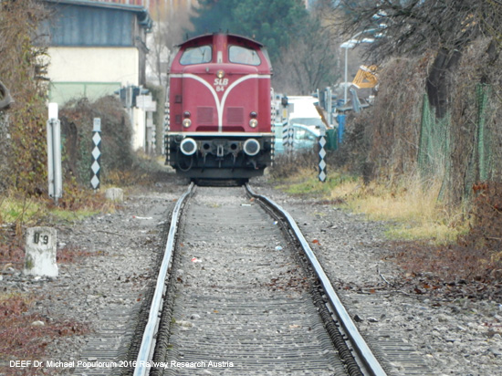
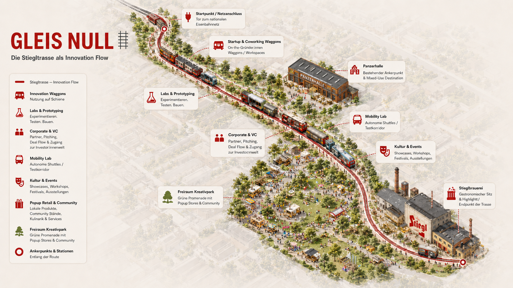
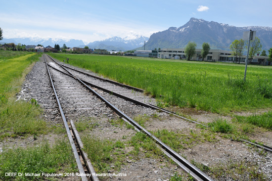
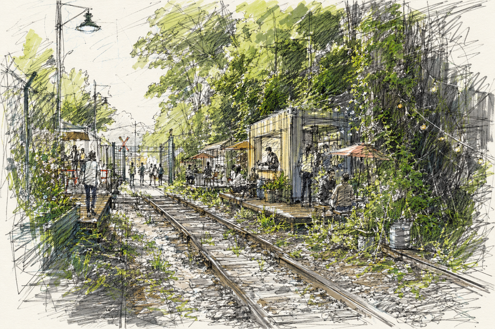
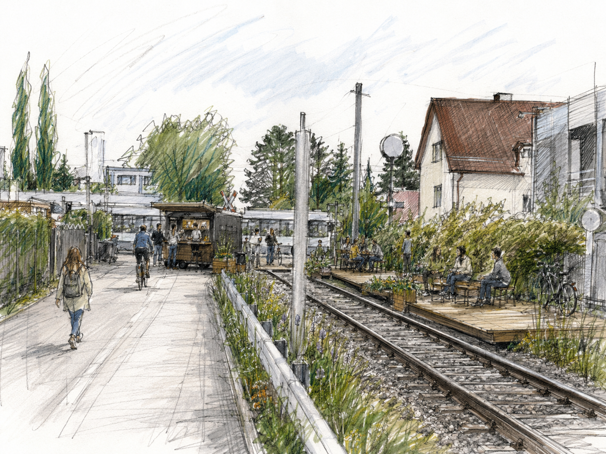
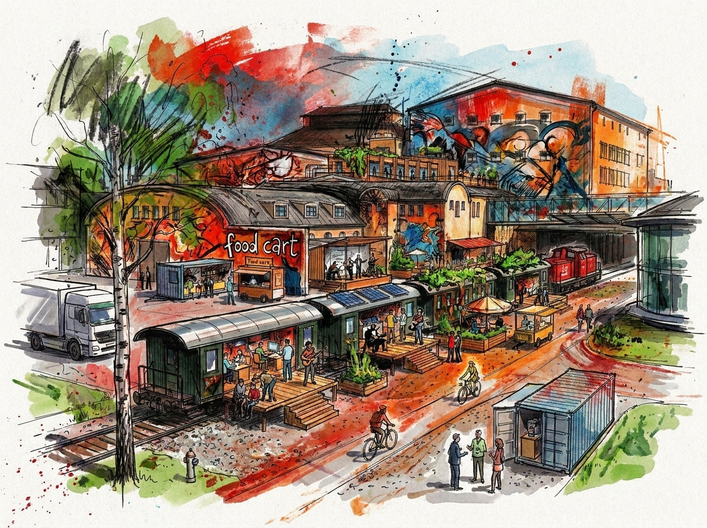
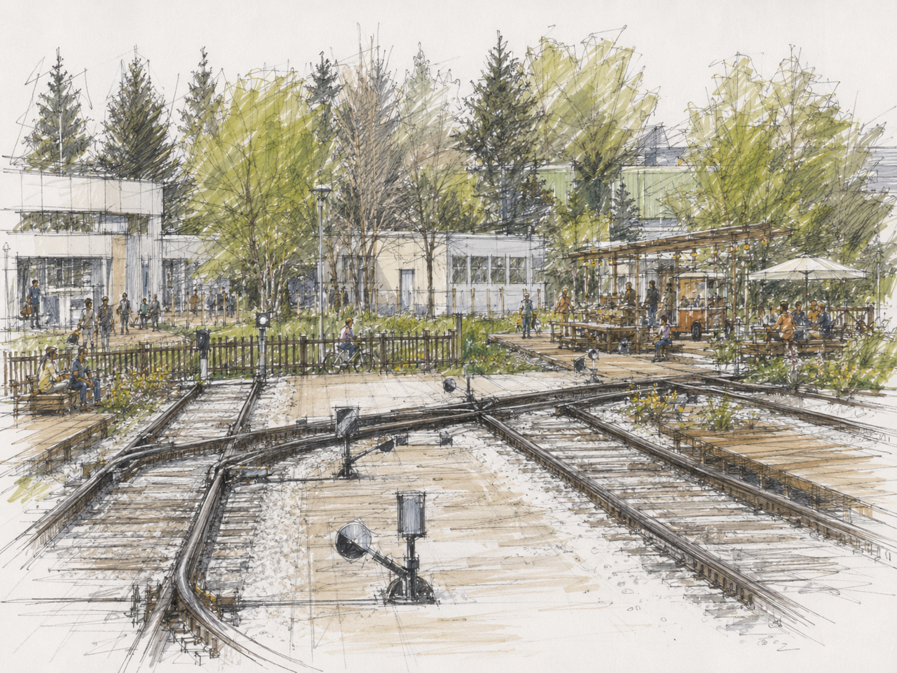
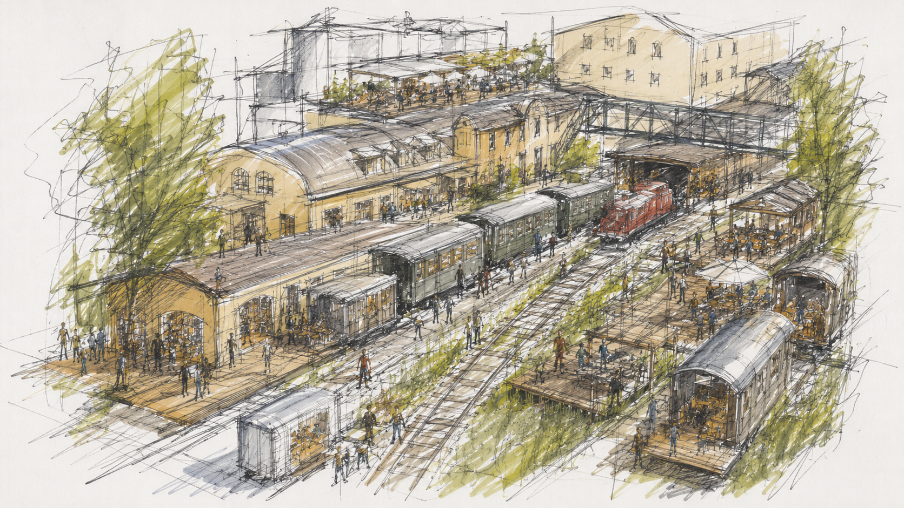

GLEIS
NULL
Wo Salzburgs letzte Industriebahn zum Stillstand kommt, beginnt Europas nächste Linie.
Salzburg braucht keinen weiteren Campus.
Es braucht ein Nervensystem.
Gleis Null verwandelt eine stillgelegte Bahntrasse in eine programmierbare Innovationslinie — 3,4 Kilometer, auf denen modulare Waggons zu Startup-Studios, Laboren, Corporate-Arenen, Kulturbühnen und Mobilitäts-Testfeldern werden. Salzburg wird Knoten null eines europäischen Netzes.
Ende 2026 rollt hier der letzte Güterzug.
Über hundert Jahre Industriegeschichte, mitten in der Stadt — und plötzlich ohne Aufgabe. Man kann das einen Verlust nennen. Oder die größte Chance, die Salzburg seit Jahrzehnten bekommen hat.
Die Stieglbrauerei stellt den Güterverkehr auf ihrer Trasse zwischen Lehen und Maxglan Ende 2026 auf LKW um. Eine innerstädtische Bahninfrastruktur droht zu verfallen und ihre Konzession zu verlieren. Gleichzeitig fehlt Salzburg — wie fast jeder europäischen Stadt — ein sichtbarer, physischer Ort, an dem sein Innovations-Ökosystem zusammenkommt.
Der eigentliche Befund ist größer. Europa fehlt es nicht an Wissenschaft, nicht an Talent, nicht an Ideen. Es fehlt am Bindegewebe: an Dichte, an Tempo, an der Bereitschaft, Disziplinen kollidieren zu lassen. Wir forschen exzellent — und lassen andernorts skalieren. Kein Geldproblem. Ein Kultur- und Geschwindigkeitsproblem.
Normalspurig, eingleisig, seit 1988 offiziell für Personenverkehr zugelassen. Angebunden ans nationale Netz — kein isoliertes Gleis, sondern Infrastruktur mit Anschluss. Und mit politischem Rückenwind: Zu einer Machbarkeitsstudie für Personenverkehr äußerten sich Stadt und Land bereits vorsichtig positiv.

Kein Ort, an dem Innovation passiert.
Eine Maschine, die sie bewegt.
Die Schiene ist nicht Kulisse — die Schiene ist das Produkt. Die Waggons sind nicht Deko — sie sind ausführbare Module. Jede Saison ein neues Release. Jede Stadt kann das Modell forken.

Die Stadt lernt, indem sie sich bewegt.
Weniger Immobilie, mehr Protokoll. Jeder Akteur verbindet sich über eine definierte Schnittstelle — sichtbar, programmierbar, auf Schienen. So wird aus einem Standort ein Betriebssystem für Innovation.
Gleis Null verwandelt tote Infrastruktur in lebendige ökonomische Intelligenz.
Ein Campus ist ein Behälter.
Eine Linie ist ein Versprechen.
Man geht hinein — und bleibt in seinem Silo. Behälter sortieren Disziplinen sauber voneinander weg. Genau das ist Europas Problem, nicht seine Lösung.
Eine Linie erzwingt Bewegung und Begegnung. Der KI-Mensch geht am MedTech-Menschen vorbei, am Kapitalgeber, am Café. Diese Reibung ist der eigentliche Wert — nicht die Waggons.
Der Ort baut physisch das Bindegewebe nach, das Europa im Übertragenen fehlt. High Line im Geist, nicht in der Bauform: ebenerdig, grün, begehbar — ein Band, das Lehen und Maxglan verbindet.

Rhythmus statt Riegel. Dichte Innovationsknoten aus Waggonclustern wechseln mit offenen, grünen Verbindungsräumen. Der Grünlandabschnitt bleibt Promenade, Aufenthalt, Puffer — der ökologische Gegenpol und ein Stück Legitimität gegenüber Stadt und Anrainern.
Kein Start bei null. Mitten an der Trasse, in Maxglan, liegt mit der Panzerhalle bereits ein bewiesener Umnutzungsort — das natürliche Schwergewicht im Herzen der Line. Sie dockt an etwas an, das lokal funktioniert: für Geldgeber und Behörden der Unterschied zwischen Reißbrett und Andockmanöver.

HEUTE
MORGENJeder Waggon ist ein Modul.
Nicht „Büros in Waggons" — das ist zu klein gedacht. Module lassen sich tauschen, thematisch belegen, mieten, bewegen und neu kombinieren. Ein physischer App Store für Innovation.
WAGGON WÄHLEN → MODUL ANZEIGEN
{{ modText }}
Das hält die Linie lebendig: nicht einmal vermietet und eingefroren, sondern ständig neu belegt. Manche Module sind fix, manche wandern — und manche reisen sogar in andere Städte des Netzes.

Vier Seiten. Ein Band.
Das Modell trägt, weil vier Seiten eines Marktes an einem Ort kollidieren — und jede eine klare Rolle hat.
{{ seiteText }}
DIE ROLLENTRENNUNG · Unis liefern die Quelle, Startups den Content, Corporates die Nachfrage, VCs das Kapital — und ein privater Operator kuratiert und betreibt. So entsteht ein Ökosystem, kein Gemischtwarenladen.
Alle 100 Tage programmiert sich Gleis Null neu.
Ein Ritual, wiederholbar, medientauglich, kommerziell nutzbar. Jeder Zyklus hat ein Thema — und endet mit einem Line Demo Day. Eine Maschine für Momentum.
THEMA DES ZYKLUS WÄHLEN
{{ themaBsp }}
Ein Ort im Takt der Stadt.
Salzburgs unfairer Vorteil: Festspielstadt trifft Gründerszene. Während der Festspiele ist die Weltelite ohnehin da — Innovation direkt daneben zu stellen, ist ein Zugang, den man nicht kaufen kann.
{{ saText }}
„Mozart war ein Startup." Ein junges, grenzsprengendes Genie, das Regeln brach und global wurde — der Archetyp der ganzen Idee.

Die Strecke selbst ist das Exponat.
3,4 Kilometer geschützt, klar abgegrenzt, nicht dem Straßenverkehr ausgesetzt — genau das, was autonome Fahrzeuge zum Testen brauchen und in einer Innenstadt fast nie legal bekommen.
EUROPAS STÄRKE ALS PRODUKT → NICHT „MOVE FAST AND BREAK THINGS", SONDERN: SICHTBAR BEWEGEN, VERANTWORTLICH TESTEN, ALLES DOKUMENTIEREN. EIN REGULIERTER ÖFFENTLICHER TESTKORRIDOR.
Transportader für Fußgänger und Radfahrer zwischen Lehen und Maxglan. Bespielter öffentlicher Raum mit Promenade, Gastro, Kultur. Reallabor, in dem Innovation nicht nur in den Waggons stattfindet, sondern draußen sichtbar vorbeifährt.
Die Salzburg AG betrieb die Strecke über ihre Vorgänger jahrzehntelang bis Ende 2020. Sie kennt Trasse, Betrieb und Konzessionsfragen aus eigener Hand. Für sie ist die Line eine Teststrecke für die eigene Zukunft — nicht Marketing.

SICHERHEIT IST DESIGN, NICHT HOFFNUNG — Fußgänger, Radfahrer und Testfahrzeuge mischen sich nie ungeordnet: getrennte Spuren, klare Zeitfenster, abgegrenzte Abschnitte. Sauber gedacht ein Vorteil, unsauber ein Haftungsrisiko.
Ein Korridor, der sich selbst misst.
Ein digitaler Zwilling der Linie macht den Ort messbar und steuerbar — und jede europäische Kopie läuft auf derselben Logik.
ILLUSTRATIVE WERTE · KONZEPT-DASHBOARD
Gleis Null ist nicht nur ein Ort. Es ist ein software-definierter Innovationskorridor.
Fünf Stationen. Fünf Jahrhunderte Beweis.
Salzburg bringt seit Jahrhunderten Weltgeltendes hervor. Entlang der Linie erhält jeder Name seine Station — Herkunft erzählt, Zukunft verankert.
KEINE RUHMESHALLE. JEDE STATION ARBEITET IN DER GEGENWART.
{{ stStory }}
{{ stHeute }}

Salzburg hat sein eigenes Genie einst ziehen lassen. Die Line ist die Ansage, dass Salzburg sein Talent diesmal hält — und ihm einen Ort baut, statt es gehen zu lassen.
Kein Schaufenster.
Ein Geschäft.
Betrieb, Risiko und Gewinn liegen bei einem privaten Operator. Drei Ertragssäulen tragen ihn — und visionäre Schichten machen ihn groß.
Startups und Scale-ups zahlen bewusst wenig — sie sind der Content, der Grund, warum alle anderen kommen.
Gestaffelt vom sichtbaren Engagement bis zum eigenen Team vor Ort. Die höchste Stufe: die eigene Station eines Salzburger Weltunternehmens — Stolz und Business fallen zusammen.
Frequenzbringer, Margenquelle und Durchlässigkeit in einem — der Schutz gegen den abgeschotteten Techclub.
Ein eingebettetes Venture Studio gründet 3–5 Unternehmen pro Jahr rund um Salzburgs Stärken: Corporate-Challenge → Uni-IP → Founder-in-Residence → 100-Tage-Validierung → VC-Demo → Spin-out mit kleiner Beteiligung des Operators. Aus dem Vermieter wird eine Equity-Maschine.
Öffentliches Anschubkapital für Trasse, Waggons, Barrierefreiheit, grünen Raum. Katalytisch — kein Betriebszuschuss.
Privates & Corporate-Kapital für Betrieb und Wachstum.
Eigenerlöse aus Partnern, Flächen und Gastro als dauerhaftes Tragwerk.
Der Lackmustest: Trägt sich der Ort aus Partner-, Miet- und Eigenerlösen — oder hängt er am Tropf? Ein Operator, der Break-even erreichen muss, trifft jede Entscheidung anders. Diese Disziplin erzwingt Qualität.
Das European
Line Network.
Fast jede europäische Stadt hat tote Industriegleise. Ein Bund wiedergenutzter Bahnkorridore, jede Stadt mit eigener Trasse und Kultur — aber demselben Betriebsprotokoll. Salzburg ist Knoten null. Über die Städtepartnerschaften hat der Korridor sein Netz von Tag eins.
Ein „Salzburg KI & Kultur"-Waggon erscheint in Verona. Ein „Dresden Deeptech"-Waggon kommt nach Salzburg. Ein „Vilnius Cybersecurity"-Waggon tourt durch das Netz. Gemeinsame Challenge-Zyklen, Founder-Austausch, europäische Demo Days. Die Metapher wird Realität — die Line fährt buchstäblich durch Europa.
Ein anderes Modell. Europas Vorsprung liegt nicht darin, die USA oder China im Geld zu schlagen. Er liegt in Offenheit, Souveränität, Vertrauen — tief verwoben mit Industrie und Mittelstand. Hardtech statt der nächsten Social-App.
Souveränität heißt Dialog, nicht Abschottung. Ein Ort, dessen ganzes Wesen Verbindung ist, kann sich nicht abkapseln, ohne sich selbst zu widersprechen. Offenheit im Licht ist sicherer als Zusammenarbeit im Schatten.
FINANZIERBAR ALS EUROPÄISCHER PROTOTYP → EIC · INTERREG · EIB · KOHÄSIONSINSTRUMENTE
PRÄZEDENZFÄLLE → STATION F, PARIS · VILLAGE UNDERGROUND, LONDON · HIGH LINE, NEW YORK · SEOULLO 7017, SEOUL
Die ganze Line —
in einer Folge.
Wie aus 3,4 Kilometern totem Industriegleis eine europäische Innovationslinie wird — erzählt statt gelesen. Der Konzept-Podcast zum Anhören unterwegs.
STEIG
EIN.
1920 fuhr hier der erste Zug. 2026 fährt der letzte. Was danach kommt, entscheidet diese Stadt — jetzt.
Gleis Null ist Salzburgs neues Nervensystem. Die erste europäische Innovationslinie, die sich bewegt.
Ein grünes Band statt einer rostenden Narbe: Promenade und Radweg zwischen Lehen und Maxglan, Märkte, Abende und Kultur, die allen gehören. Ein Ort, an dem die Kinder dieser Stadt sehen, dass man hier gründen kann — und bleiben.
Ein physischer Fuß im Innovationsstrom: Zugang zu Talent, Startups und frühem Deal-Flow. Und die edelste Form der Partnerschaft — eine eigene Station, die Ihre Herkunft erzählt und Ihre Zukunft baut.
Eine sehr schnelle Idee, entstanden an einem einzigen Abend — am 2. Juli 2026, nach dem Lesen der Salzburger Nachrichten.
Noch lange nicht perfekt. Aber ein Anfang, ein Gedanke, eine Einladung zum Weiterdenken. Made in Salzburg — for the love of Salzburg.